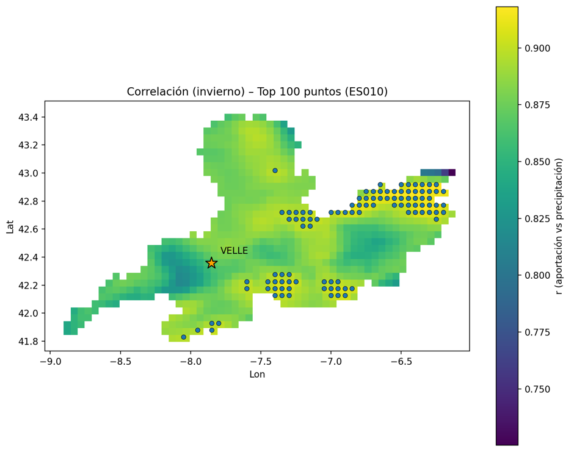
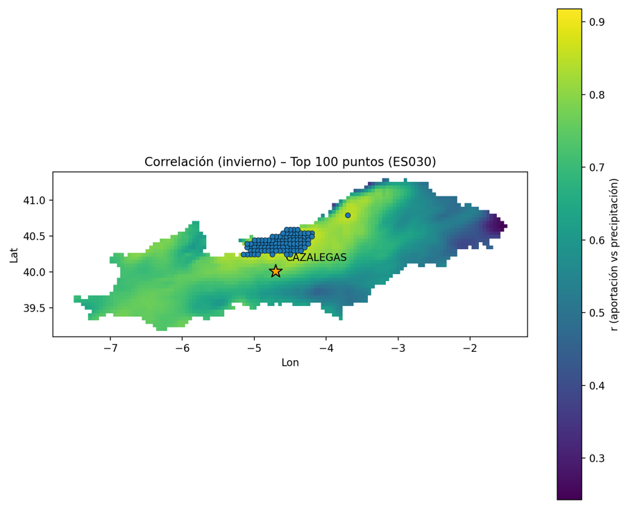
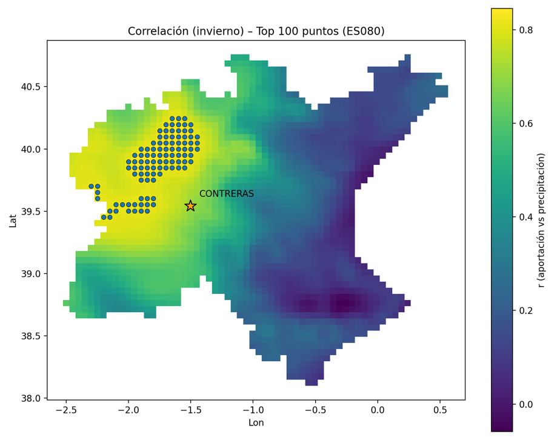
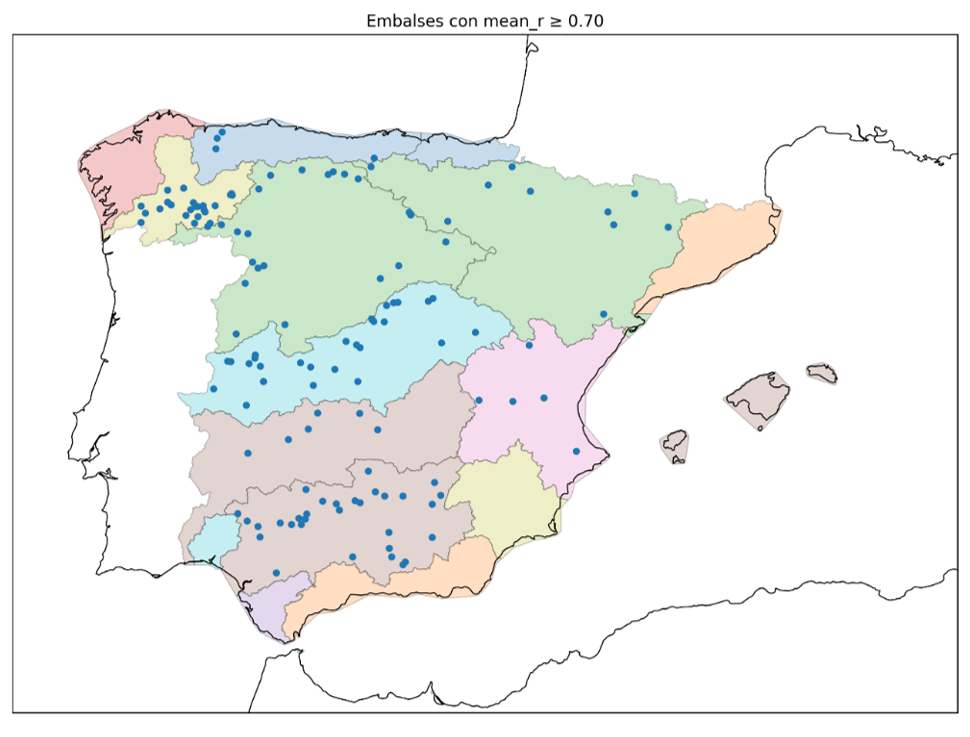
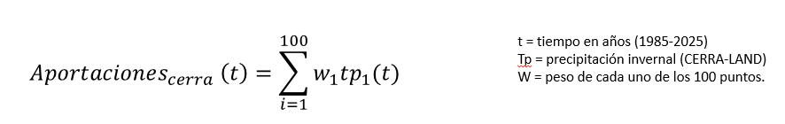

MÉTODOS
La península ibérica es una de las regiones mediterráneas más propensas a sequías prolongadas. Estos periodos de baja precipitación necesitan grandes reservas de agua en almacenamiento. En los últimos años, múltiples estudios de cambio climático han identificado a la península ibérica como una de las regiones en el planeta que experimenta el mayor descenso de precipitaciones. Por tanto, los resultados del proyecto se han aplicado, utilizado los datos regionalizados de precipitación previamente obtenidos (ver la sección de Regionalización), a la exploración de cambios en los patrones futuros de precipitación respecto al periodo 1985-2020 (de noviembre a marzo).
Para ello, se ha calculado la correlación de la precipitación en las cuencas de los ríos (ver sección de Datos) y CERRA-Land. Después, se aplicó el método PLS (regresión de mínimos cuadrados parciales). PLS es un método de regresión lineal múltiple que se aplica en dos pasos:



Selección de los predictores de precipitación. Se llevó a cabo un estudio de correlación entre la precipitación predicha por el modelo y datos de aportaciones a embalses, y se seleccionaron los embalses con correlaciones medias superiores a 0.7 (127 embalses).

Entrenamiento. Se llevó a cabo utilizando CERRA-Land. Se creó un modelo de regresión lineal a partir de estos 127 puntos y se aplicó a los escenarios previamente regionalizados.

Por último, se estudiaron los resultados de este modelo.